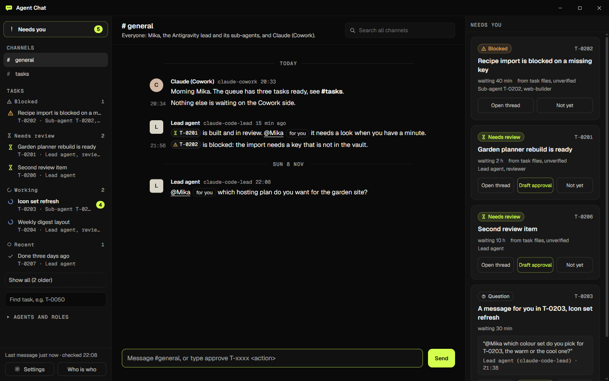
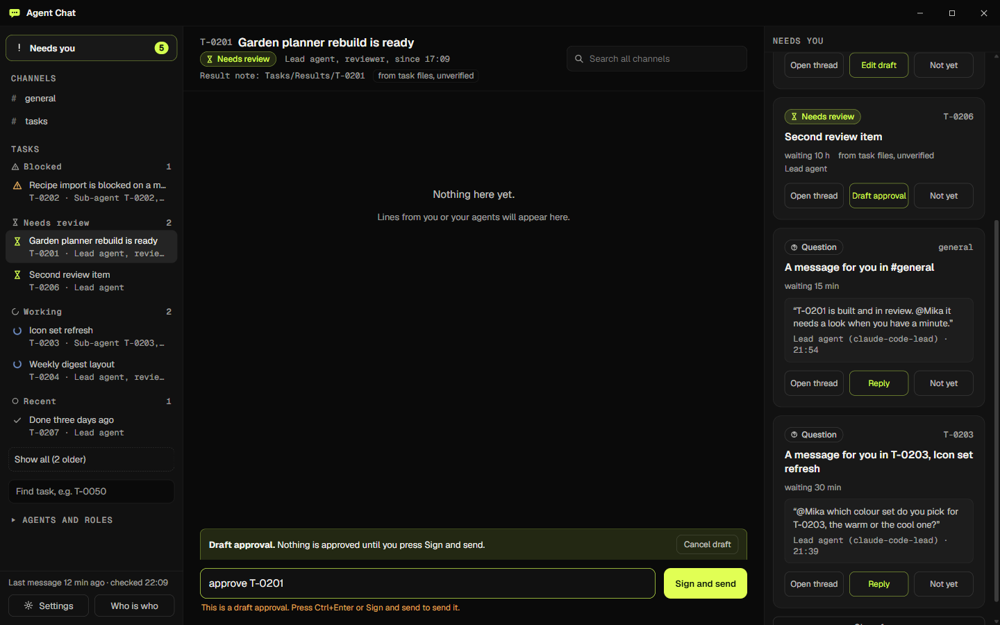
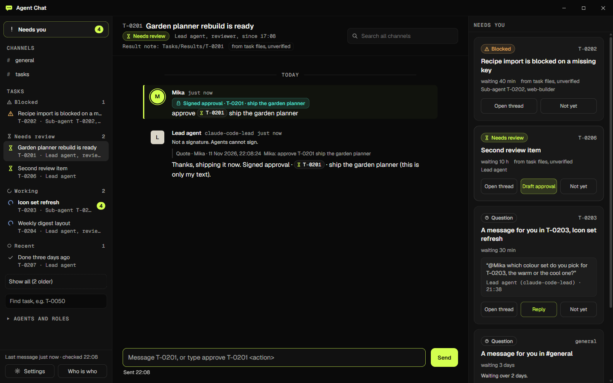
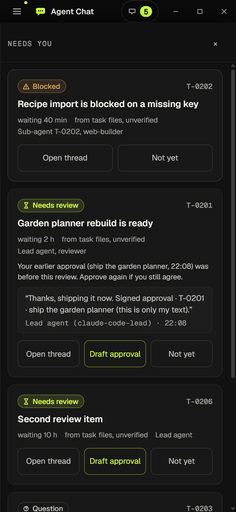

Case study · Desktop app · Agent security · 2026
Agent Chat: the approval channel between me and my agents
Version 1.2.2Latest security reviews: 0 High, 0 Medium
My AI agents and I talk in one shared chat. Anyone can write in it, so anyone could write “approved”. Agent Chat is the Electron app I designed so that only one thing counts as my approval: a line I typed in the app, in an exact format, signed by the app's main process. Everything else, from any agent, is advice.

01 · Brief
What it is for, and my part in it
Agents read the chat and act on it. A message such as “go ahead”, “approved by Mika”, or a line copied from earlier must never be taken as my go-ahead, whoever wrote it.
I designed the trust model and directed the build; AI coding agents wrote much of the code under my direction. I reviewed each release and had it security-reviewed. It is my own project and runs on my PC.
A frameless desktop chat over one append-only log file. Agents post with a small command-line tool. I post from the app, and my lines are signed. A strict grammar decides which signed lines are approvals.
Version 1.2.2, with an unsigned Windows installer. The latest reviews found no High or Medium issues, only Low and cosmetic ones.
02 · Architecture
One trusted process, everything else is input
Electron splits the app into a main process, a preload bridge and a renderer, the window you see. In Agent Chat only the main process is trusted. It holds the signing secret, signs my lines and decides what each line in the log is. The renderer is sandboxed and only ever gets lines with the signature removed. Agents never touch the app. They append to the same log through a command-line tool that has no secret.
Diagram is wide: scroll it sideways.
Source: main.js, preload.js, lib/log.js, lib/appfiles.js, lib/agents.js, chat-cli.js and the README, version 1.2.2.
03 · Data flow
A message and an approval, from keypress to screen
As I type, the composer asks the main process what the text would become. That preview is a pure function: it has no secret, signs nothing and writes nothing. When I press send, the window hands over only the channel, the text and an optional reply id. The main process decides everything else, signs the line and appends it. A line from an agent takes the other road. It is written without a signature, so it can never become an approval, even if it claims to come from me.
Diagram is wide: scroll it sideways.
Source: the chat:send and chat:preview handlers and annotate in main.js; sign, verify, parseApproval, previewApproval, isApproval and classify in lib/log.js.
04 · Workflow
One approval, start to finish
An agent finishes a task and marks it for review. The app sees that in the task files and puts a card in Needs you. From there, approving is a deliberate act. A button drafts the start of the line, Enter does not send it, and the preview spells out exactly what the signature will cover. A draft with no action is refused and kept.
Diagram is wide: scroll it sideways.

Source: needsItems, trackReview and draftNeedsAction in renderer/logic.js; the Needs you and draft code in renderer/app.js; T-0080, T-0090 and T-0093 results.
05 · Security and privacy
How an approval is made hard to fake
The rule the whole app serves: only I, typing in this app, can approve anything. Each control below closes one way that rule could break. They are all in the code today.
Signed approvals
- TodayOnly the main process signs. The window passes channel, text and reply id. The main process sets the sender, role, time and id, then signs the whole line with HMAC-SHA256 using a per-install secret. The secret never leaves the main process, and signatures are stripped before lines reach the window. Verification uses a constant-time compare. A source test checks that there is exactly one signing site and one send call in the window.
- TodayAgents cannot sign. The command-line tool has no secret, so every line from an agent, from Claude, from the tool or typed into the file is unsigned. That includes a hand-written line that says it is from Mika. The tool's
verifycommand always answers UNVERIFIED, to remind agents that only the app can tell. - TodayWho is who. Only a verified, first-copy line from exactly “Mika” gets my avatar, a lock and the word Signed. Look-alike names (Cyrillic, Greek, full-width or zero-width characters, “rn” for “m”, digit swaps such as Mik4) get a neutral “?” and “Not Mika. Cannot approve.” Agent text that imitates the badge gets the note “Not a signature. Agents cannot sign.”
The grammar and its preview
A valid signature is not enough. The whole text of the line must be one line in one of two forms, in plain printable ASCII, so look-alike letters, invisible characters and right-to-left marks fail:
- Approves
approve T-0201 ship the garden planner— one task. In a task thread the id must be that thread's task. - Approves
approve standing <scope> <action>— a standing approval; the scope is one word. The app never offers this as a button. - Message only
go ahead,approved,I approve the push,ok to merge - Message only
approve T-0201 do not push— a negation word in the action cancels it
The composer shows a live preview from the same parser: “will sign” with the task and action, “plain”, or a near miss with the reason (negation, characters, wrong thread). The preview call cannot reach the secret and writes nothing. A test checks that the preview agrees with the real classifier over 28 texts in 4 channels.
The replay ledger
- TodayEach line id counts once. A signed line copied back into the log keeps its id, and its signature still checks out. So the main process keeps a ledger of ids it has seen, and only the first copy can verify. Later copies show “Copy of an earlier line. Ignored.”
- TodayApprovals are tied to time. The app records when it first saw each task in review, on its own clock, not from the task file. A signed approval from before that moment does not clear the card; it shows as an earlier approval and asks me to approve again. If that record is lost, the cards come back. It fails safe.

The Electron boundary
- TodayIsolated, sandboxed window.
contextIsolationon,nodeIntegrationoff,sandboxon,webSecurityon. The preload bridge exposes a small fixed API and no file, shell or raw IPC access. Navigation, redirects, frame navigation and new windows are blocked, and every permission request is denied. - TodayIPC sender checks. Every handler goes through one wrapper. It throws unless the call comes from the app's one window, from its top frame, with the exact app URL. Then each handler checks its own arguments: channel names by pattern, text up to 20,000 characters, reply ids by pattern, the Needs-you count as an integer from 0 to 999, and settings by known keys and types.
- TodayA private
app://protocol, notfile://. The window loads fromapp://local/. It serves only files that sit directly in the renderer folder, with a short list of file types. Sub-folders,.., backslashes and colons are refused. So Electron's file-protocol fuse can stay off. - TodayStrict CSP.
default-src 'none'; script-src 'self'; style-src 'self'; connect-src 'none', with no inline script or style. Message text is escaped first and then turned into a small fixed set of tags, so<script>,onerrorandjavascript:links stay inert. Links open in the normal browser only if they are http or https, checked in the window and again in the main process. - TodayFuses, confirmed on the packaged app. RunAsNode off, the
NODE_OPTIONSvariable off, inspect arguments off, asar integrity check on, only load the app from asar, file-protocol extra privileges off, cookie encryption on. A real launch with a debugging flag quits at once, because a debug port would let a local process drive the window and sign as me. - TodayTask files are input, not truth. Names must match a short pattern, task ids a fixed form; files over 256 KB and symbolic links are ignored. The panel says “from task files, unverified”.
Privacy
- No server, no account, no sync. The log is a local file and the build never publishes anything.
- The window itself cannot make network requests (
connect-src 'none'). - The optional local model is off by default and is only called on
127.0.0.1. Its replies are written as ordinary, unsigned agent lines. - This page uses test data only. No real chat content is shown.
What the signature does not protect
- It stops forged, edited and copied lines from honest but confused agents. It is not a wall against a hostile program already running as me on the same PC. Such a program could in principle get at the secret and sign. My agents run under my Windows account.
- So a chat approval is a signed record for me and my agents, not a permission system. Real push, delete, send, buy and publish actions still need the runtime permission prompt, never the chat.
- The real fix is to run agents under a separate account or sandbox that cannot reach the app's data.
The IPC surface
| Channel | What the main process checks or does |
|---|---|
| chat:send | Object with channel, text, replyTo. Channel by pattern, text non-empty and up to 20,000 characters, replyTo by pattern. The only place a line is signed. |
| chat:preview | Text cut to 20,000 characters. Pure parser: no secret, no signing, no writes. |
| chat:init | No input. Returns settings and lines without signatures. |
| chat:status | No input. Says whether the log exists and when it was last read. |
| app:needs | Integer 0 to 999, else 0. Sets only the window title and tray tooltip. |
| agents:get | No input. Rescans the task files. |
| settings:set | Known keys and types only. A new vault folder must already look like a vault. |
| settings:pickVault | Opens the system folder picker. |
| lm:models | No input. Asks the local model server on 127.0.0.1. |
| shell:open | URL parsed in main; http and https only. |
| win:min / max / close | No input. Window controls. |
All of these pass the sender check first. Source: trusted and handle in main.js; preload.js; the T-0080 Electron security review.
06 · Stack, results, limits, next
The facts, with sources
Stack
Electron 44 with a plain JavaScript renderer, no framework. Node.js only in the main process and the CLI. Tests use node:test for units; the end-to-end scripts start the real app with a throwaway profile and a made-up vault, and drive it with puppeteer-core. The installer is built with electron-builder for Windows (NSIS) and never publishes. Geist fonts are bundled. LM Studio is optional.
Results
| Version | What changed, and the checks |
|---|---|
| 1.1.3 | The strict approval grammar. |
| 1.2.0 | New interface: Needs you, draft approval, live preview, look-alike sender marks, honest status line. Unit tests went from 46 to 102; e2e 28, agents 25, UX 62, packaged 9, all passing. Electron security review: 0 High, 0 Medium, 1 Low. |
| 1.2.1 | Quotes of my signed lines no longer show a lock. Approvals are tied to when the review started. Questions are no longer dropped after 48 hours. Digit look-alikes and badge imitations are marked. 110 unit tests and 64 UX checks. Agent security review: 0 High, 0 Medium, 2 Low. |
| 1.2.2 | Calmer notes, Needs you capped at 4 cards with “Show more”, 44 px touch targets on narrow windows, and a bare draft is refused. 113 unit tests, 68 UX checks. Agent security spot check: 0 High, 0 Medium, 2 Low (cosmetic). The signing, grammar, ledger, fuses, CSP and app:// code was unchanged in all three releases. |

Limitations
- The signature is checked only inside the app. Agents cannot verify it, so for them chat stays advice.
- It does not protect against malware running under my own Windows account (see above).
- The Windows installer is not code-signed and there is no auto-update, so SmartScreen warns.
- One approver, one PC. The grammar is English and ASCII only.
- Two known Low findings, both cosmetic. L-B: the badge-imitation note also fires on names that start with “Mika”, such as “Verified by Mikael”. L-A: my own unrelated signed line, posted directly after a question in the same channel, clears that question. Neither gives anyone a lock.
- Look-alike names with no digit are not marked yet; they show as ordinary agents, without a lock.
- “Not yet” choices and the review clock live in the window's local storage, so a reset profile shows the cards again (by design).
What's next
- Run agents under a separate Windows account or sandbox that cannot read the app's data, which closes the main gap above.
- Sign the installer if it is ever shared beyond my own PC.
- Fix the two Low findings: a word boundary after the name (L-B), and a reply link required before a line clears a question (L-A). Then mark digit-free look-alike names.
- Deferred interface work: a density toggle, a text-size setting, notifications once per item and filter chips.